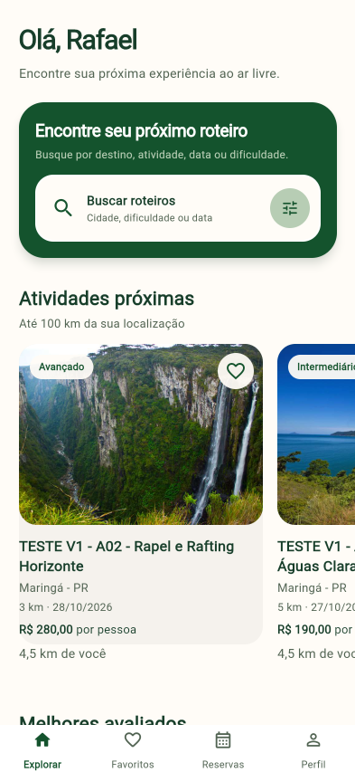
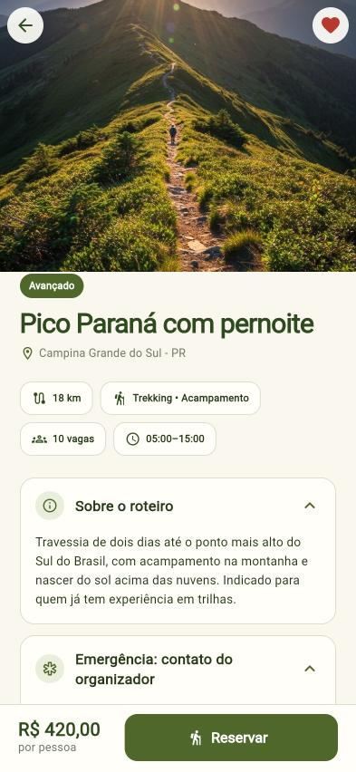

Roteiros perto de você
Atividades a até 100 km da sua localização, os melhores avaliados e seções por tema, como cachoeiras, aquatrekking e acampamentos.
Trilhas, cachoeiras e acampamentos organizados por guias e agências, com reserva em poucos toques e tudo o que você precisa saber antes de sair de casa.

Na prática
Veja como é sair do “vamos marcar” para a aventura acontecendo.
Para turistas
Menos planilha e mensagem perdida. Tudo sobre o roteiro na mesma tela.
Atividades a até 100 km da sua localização, os melhores avaliados e seções por tema, como cachoeiras, aquatrekking e acampamentos.
Atividade, dificuldade, datas e recursos de acessibilidade, com resultados no mapa.
A lista do que levar vira um checklist só seu, com os itens obrigatórios em destaque.
Notificações quando o organizador confirmar, recusar ou cancelar a sua reserva.

de raio para achar atividades perto de você
de previsão do tempo para a data da saída
da busca à avaliação: encontre, reserve, prepare-se e avalie
Para guias e agências
Divulgue seus roteiros para quem já está procurando aventura e controle tudo em um só lugar.
Segurança e confiança
Guias e agências enviam documentos profissionais, analisados antes de receberem o selo.
Só avalia quem participou: as avaliações são liberadas depois que a saída é concluída.
Cada roteiro informa o telefone de emergência do organizador e como acioná-lo.
Os roteiros mostram as condições de acessibilidade e restrições declaradas pelo organizador.
Não. O RotaFácil funciona direto no navegador do celular ou do computador. Basta acessar rotafacil.eco.br e criar a sua conta.
Não. O RotaFácil organiza a busca e a reserva. O valor mostrado é informado pelo organizador, e o pagamento é combinado diretamente com ele.
Guias e agências com conta de organizador e Cadastur informado. Agências também podem convidar guias para a sua equipe.
Sim. Você acompanha e cancela as suas reservas na aba Reservas, e o organizador é avisado.